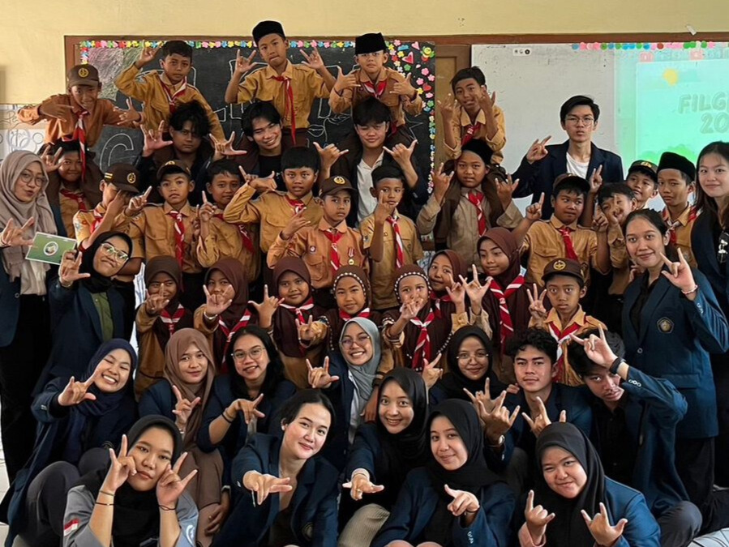
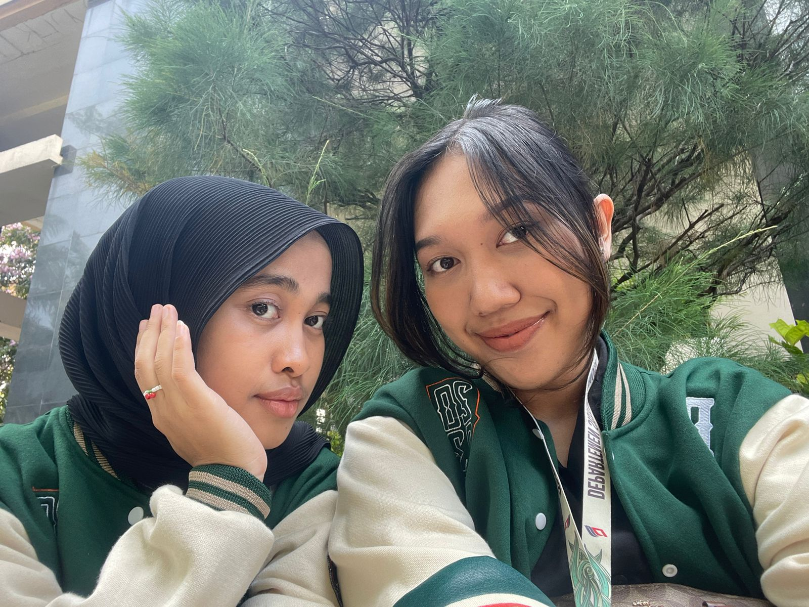
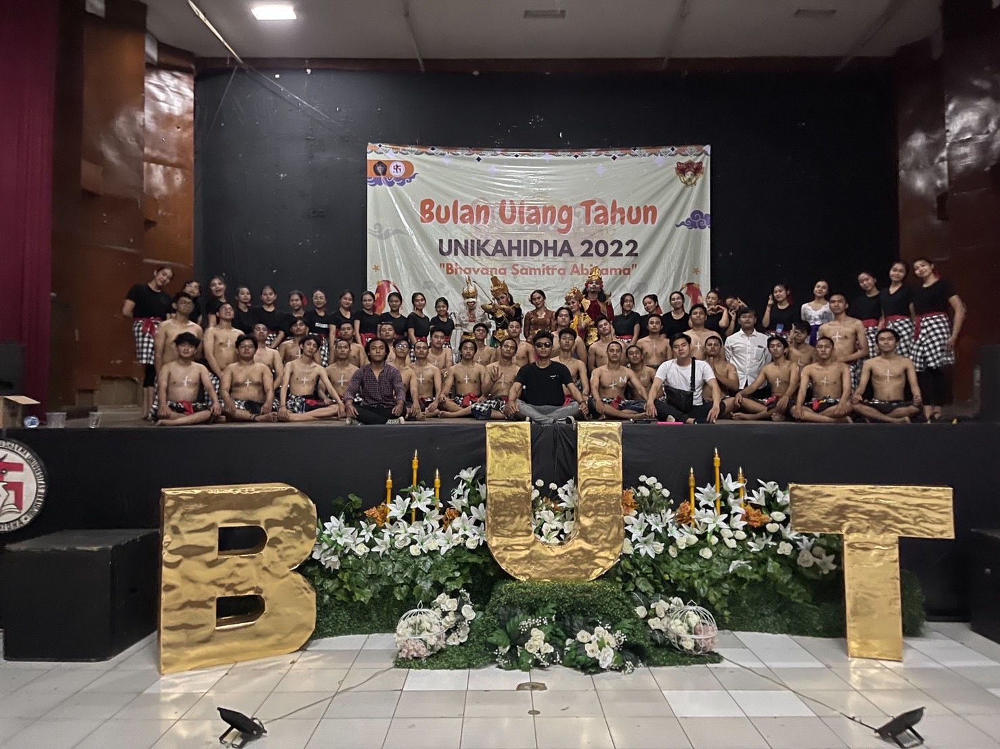

I am an active student at the Faculty of Computer Science, Brawijaya University.
Download CVHalo semuanya, nama saya Ni Nyoman Dinda Permata Putri Bangse. Saya adalah mahasiswa aktif di Fakultas Ilmu Komputer Universitas Brawijaya. Motivasi tinggi untuk mengembangkan pengetahuan saya telah mendorong saya untuk menjadi bagian dari lingkungan akademis ini. Nomor registrasi mahasiswa saya adalah 225150607111034, dan saya berasal dari provinsi Bali. Salah satu kegemaran saya yang tidak pernah pudar adalah menonton film. Bagi saya, pendidikan di Fakultas Ilmu Komputer tidak sekadar tentang kegiatan kelas. Ini tentang menjelajahi ide-ide baru, merangkai informasi terkini dalam dunia teknologi, dan menerapkan pengetahuan tersebut dalam kehidupan sehari-hari. Saya yakin dengan semangat belajar yang terus berkobar, saya dapat membawa perubahan positif tidak hanya untuk diri saya, tetapi juga bagi komunitas di sekitar saya. Kemampuan saya dalam beradaptasi dengan cepat adalah salah satu keunggulan saya. Saya senang menghadapi tantangan baru dan terus memperluas wawasan pengetahuan. Setiap kesempatan untuk belajar di luar kurikulum resmi saya anggap sebagai peluang emas untuk tumbuh dan berkembang.Dorongan kuat untuk memiliki pengetahuan yang luas terus mendorong saya untuk mengasah keterampilan dan kemampuan saya. Saya yakin bahwa dengan tekad yang kokoh dan semangat yang menggebu, saya dapat menjadi individu yang memberikan kontribusi besar dalam dunia teknologi informasi. Saya percaya bahwa semangat belajar yang terus-menerus adalah kunci kesuksesan. Saya bertekad untuk terus meningkatkan pengetahuan dan keterampilan saya sejalan dengan perkembangan pesat dunia teknologi. Saya berharap dapat berperan dalam proyek-proyek inovatif dan menjadi bagian dari solusi untuk tantangan teknologi di masa depan.

Filkom Greenaration adalah salah satu program kerja BEM FILKOM yaitu berupa pengabdian masyarakat dimana memberikan pengetahuan kepada anak sekolah dasar di daerah pelosok mengenai lingkungan.

Bpmdsi Filkom merupakan Badan Perwakilan Mahasiswa Departemen Sistem Informasi yang memiliki fungsi legislatif di KBMDSI dimana bertugas mengawasi dan mengevaluasi program kerja EMDSI selama satu periode kepengurusan.

Program kerja BUT UNIKAHIDHA adalah program kerja Perayaan Bulan Ulang Tahun UKM UNIKAHIDHA Universitas Brawijaya dimana UKM ini merupakan UKM Kerohanian Hindu yang ada di Universitas Brawijaya. Akan terdapat berbagai penampilan dari berbagai angkatan yang ada. salah satunya yaitu Penampilan Kecak angkatan termuda.
Nama: Ni Nyoman Dinda Permata Putri Bangse
Email: dindapermataa@student.ub.ac.id
Education : Brawijaya University